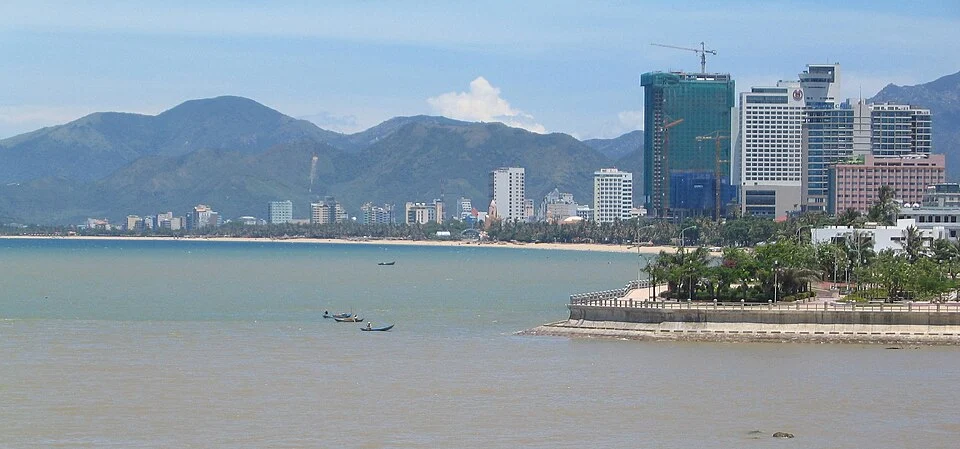

Готовый путеводитель
Маршруты, пляжи, транспорт и детали, которые пригодятся до поездки. Выбирайте и путешествуйте в своём ритме.
Смотреть путеводителиВыбирайте готовый путеводитель или расскажите мне о своих планах. Помогу разобраться с направлением, пляжами, отелями и маршрутом — с учётом ваших пожеланий.

Планируйте самостоятельно или доверьте детали мне.
Маршруты, пляжи, транспорт и детали, которые пригодятся до поездки. Выбирайте и путешествуйте в своём ритме.
Смотреть путеводителиРасскажите, какой отдых вам хочется. Я составлю план с учётом ваших дат, интересов и темпа путешествия.
Заказать маршрутПомогу выбрать направление, курорт и отель с учётом важных для вас деталей — от пляжа до перелёта.
Подобрать турЯ побывала на Фукуоке, в Нячанге и Дананге. У каждого места свой характер. Выберите, какое путешествие хочется исследовать.

Остров, пляжи и разные районы. Разберёмся, где остановиться и как спланировать дни.
Открыть Фукуок
Море, прогулки и жизнь курортного города. Выберите подходящий район и ритм отдыха.
.webp)
Пляжный отдых и город. Посмотрите идеи для поездки и изучите мои впечатления.
.webp)
Я Юлия Горбачёва, турагент с 2008 года. Помогаю выбирать место для отдыха и заранее разбираться в деталях поездки.
Рассказываю, какой пляж выбрать, где удобнее жить и сколько времени займёт дорога. Делюсь опытом своих поездок и маршрутами, которые можно повторить.
Узнать обо мне18 лет в туризме · Личный опыт · Маршруты и гайды
Большой путеводитель — для всей поездки. Короткие маршруты — для отдельных дней.

Поможет выбрать район и пляж, продумать дни и подготовиться к самостоятельной поездке.
Когда хочется заранее понять маршрут и не тратить время на месте.
.webp) МИНИ-ГАЙД · PDF
МИНИ-ГАЙД · PDF.webp) МИНИ-ГАЙД · PDF
МИНИ-ГАЙД · PDFЧек-лист для первой поездки и материалы о Фукуоке — чтобы разобраться с первыми шагами.
.webp)
Один лист с важными делами до вылета: документы, связь и подготовка к поездке.
.webp)
Первые шаги планирования: районы, пляжи и вопросы, которые стоит решить заранее.
.webp)
Чем отличаются два варианта отдыха и что проверить, прежде чем выбрать жильё.
Разбираю отели и направления, делюсь наблюдениями из поездок и полезными деталями.
Что проверить кроме красивых фотографий и цены.
.webp)
Как выбрать место для отдыха и распределить дни.

Пляж, дорога, окружение и важные нюансы номера.
Собрала ответы на вопросы, которые чаще всего возникают перед поездкой: про сезон, выбор курорта, документы, отдых с детьми и подготовку к путешествию.
Это зависит от направления и формата отдыха. Для пляжного отпуска, семейной поездки или знакомства со страной лучше ориентироваться на сезонность конкретного региона. Я помогаю подобрать направление с учётом времени поездки и ваших ожиданий.
Фукуок подойдёт тем, кто хочет более спокойный островной отдых, пляжи и размеренный ритм. Нячанг — тем, кому важны городская инфраструктура, прогулки, кафе и активность. Выбор зависит от вашего формата отпуска.
Условия въезда зависят от гражданства, длительности поездки и актуальных правил на момент путешествия. Перед поездкой лучше проверить свежие требования, а при необходимости я подскажу, на что обратить внимание при подготовке.
Да, во Вьетнам часто едут семьями. Важно заранее выбрать удобный курорт, спокойный пляж, подходящий отель и понятную логистику. В материалах и консультациях я помогаю учесть такие детали заранее.
Лучше заранее подготовить документы, страховку, базовую аптечку, средства от солнца и продумать мелочи вроде связи и оплаты. Для этого на сайте есть полезные материалы и чек-листы.
Да, если нужен более индивидуальный формат, можно запросить помощь в подборе маршрута с учётом ваших интересов, состава семьи и продолжительности поездки.
Слова людей, которым я помогла с выбором и организацией отдыха.